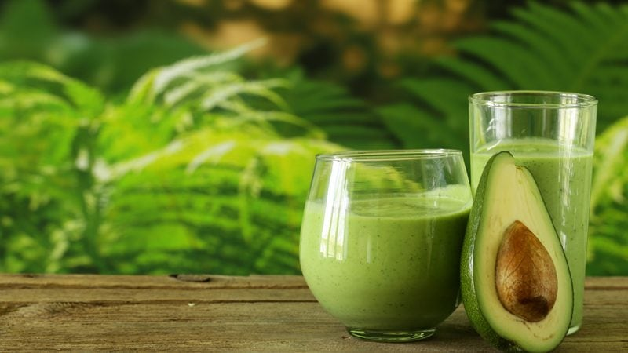

Swiss Avocado Smoothie
~ raw, vegan, gluten-free, nut-free ~
Many of the smoothies I have created are a bit higher in calories, that is because I built them to be a meal replacement for my smoothie fast. My goal here is to make sure I am getting enough good quality calories, fats, fibers, and protein. If you feel that any of these recipes may be a bit too heavy for you at the time that you want to make them, just decrease some of the quantities or omit an item.

Don’t be afraid to play around. I added a bit more water and ice to this smoothie than normal, and it kept growing in size, therefore, I couldn’t finish it. So now I have a beautiful full jar waiting for me tomorrow in the fridge. I often don’t put down as to how much the receipt yields in volume, the reason being is that sometimes I add more water or ice, depending on the consistency I desire at the time being.
Smoothie Tips
Blending fruits and vegetables together breaks down the cells of plants and improves digestibility. BUT even with that, be sure to chew your smoothies. The chewing process starts the release of the saliva in your mouth. The mixture of saliva and your food is where digestion begins. This is a very healthy habit to get into. It may feel strange at first, but soon it will become an automatic response.
- 3 Tbsp chia seeds
- 1-3 cups water
- 3 Tbsp lemon juice
- 5 cups spinach
- 3 oz (3 leaves) Swiss chard leaves
- 1 small banana, frozen and ripe
- 1/2 (2.9 oz) ripe avocado
- 1 medium (6 oz) apple, organic
- 3 Tbsp Raw Vegan Protein Powder
- NuNatural liquid stevia
- Pinch Himalayan pink salt
Preparation:
- Soak the chia seeds in 1 cup of water and lemon juice for about 15 minutes in the blender carafe. Enough for them to swell up.
- The first thing to add to your blender is the liquid. This will the greens move more freely when blending.
- Start with 1 cup. After everything is added, feel free to add more if desired.
- The more liquid you add the more watery or runnier the smoothie will be.
- Add the spinach and Swiss chard. Blend until the greens are broken down.
- Blending in stages prevents chunks.
- Add the frozen banana, avocado, apple, protein powder, sweetener, and salt. Blend until smooth.
- I always recommend frozen bananas over fresh. Make a habit out of storing overripe, peeled bananas in the freezer for future smoothies.
- A dash of a high-quality salt will increase the minerals and improve the taste of your smoothie.
- A good green smoothie should be perfectly smooth.
- Add more water if needed.
- Optional – Add ice
- Always add the ice last. Otherwise, you may over blend the ice, and it will make your smoothie watery rather than frosty.
- Learn how to design your own smoothies by reading through my, Template for Designing Smoothie Recipes.
Why I added Swiss Chard
Here are some of the ways in which the nutrients in Swiss chard provide health benefits.
Vitamin K
- The exceptionally high amount of vit. K in Swiss chard promotes healthy bones by limiting the activity of osteoclasts, cells that break down bone tissue, while at the same time activating osteocalcin, a bone-building protein.
Vitamin A
- Swiss chard is an excellent source of beta-carotene, which is converted by the body into vitamin A, known to be beneficial to the eyes.
- Studies have shown including high amounts of vitamin A in the diet lowers the risk of developing cataracts.
- Beta-carotene is also linked to a decreased risk of skin cancer, and high amounts of vitamin A may help to protect the lungs from emphysema.
Vitamin C
- The antioxidant properties of vitamin C protect the body from damage by free radicals, which cause many harmful effects including inflammation, mutations in DNA, and oxidation of cholesterol, which allows it to stick to the walls of arteries, leading to stroke or heart attack.
- Vitamin C is also important for a healthy immune system.
Vitamin E
- A fat-soluble antioxidant, vitamin E prevents free radical damage and protects the cardiovascular system, and its anti-inflammatory activity helps to alleviate symptoms of arthritis and asthma.
- Vitamin E has also been shown to slow the rate of decline of cognitive function in older adults.
Vitamins B2 and B6
- These vitamins act together to convert homocysteine, a harmful molecule that can damage blood vessels, into methionine, an important amino acid.
- In addition, vitamin B2 is involved in the production of glutathione, an antioxidant.
Potassium and Magnesium
- Swiss chard is rich in the minerals potassium and magnesium, both of which are involved in regulating blood pressure and helping to maintain heart health.
Iron
- Well-known for its role as a component of hemoglobin in red blood cells, iron is essential for energy and protection against anemia.
Dietary Fiber
- Including ample amounts of fiber in the diet helps to reduce cholesterol, control blood sugar levels and protect against cancer.
How to Select and Store
- Choose chard that is held in a chilled display as this will help to ensure that it has a crunchier texture and sweeter taste.
- Look for leaves that are vivid green and that do not display any browning or yellowing.
- The leaves should not be wilted nor should they have tiny holes.
- The stalks should look crisp and be unblemished.
- Do not wash Swiss chard before storing it as the exposure to water encourages spoilage.
- Place chard in a plastic storage bag and wrap the bag tightly around the chard, squeezing out as much of the air from the bag as possible.
- Place in the refrigerator where it will keep fresh for up to 5 days.
- If you have large batches of chard, you can blanch the leaves and then freeze them.
© AmieSue.com